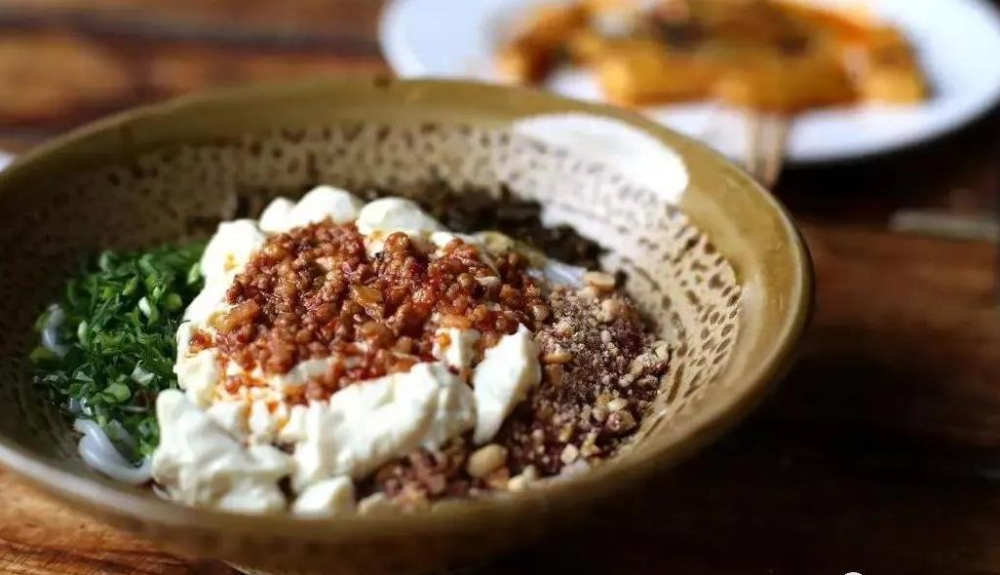

昆明必吃榜的太小食堂
太小食堂 上午11:00-14:00 下午17:00-21:00
客流量很大 不过他家可以提前预约 不然排队老久味道：家常味 符合大众的口味 下饭菜！
美团有双人 四人套餐 性价比高。
同德悦中心店 有二楼 餐桌多
菜品：
【干椒鱿鱼】看起来很辣 其实没有特别辣 很香
【烧糊辣椒炒肉】辣椒不是辣的那种 糊辣味很香
【千张肉】我觉得和烧白是一个物种 不会特别腻
【飞天空心菜】这个是我意想不到的辣 有很多小米辣属于那种清新脱俗的辣
【桃胶银耳】我以为会很甜 其实甜度最多一分
【奶白酒】甜的酒的味道不怎么明显因为加了牛奶可以用来解辣
买的是美团双人餐 三个人足够吃！

北门街
是昆明的一个老街道，广益饭店的前身是北门书店，现在成了老昆明的家常菜馆子，一些在家里常吃的菜经过创新成就了不一样的好口味！
〇金广益饭店：45道/人
〇橙汁牛肉、酱烧鲫鱼、手撕烧鸡、干煸汤圆红豆园：60菌/人
〇饵块鸡、蛋黄洋芋丝、酥红豆、牛干巴。
昆明美食街螺峰街
离翠湖不远，从卢汉公馆步行10分钟，几乎没有游客，都是本地人的小美食街！ 味道地道，价格不贵 烤罗非鱼25元一条，嫩！绝对是活鱼腌制烤豆腐6元一份，太便宜了！ 现切牛肉米线（早点），15元一份，有小青柠，薄荷叶，很东南亚风！ 附近有朱德故居。 强烈推荐！！！
园西路
号称“云南大学学生后食堂”，是一条小吃街，没有环境可言，价格比较实惠，口味不错。
烤猪蹄
金火王烧烤
越南小卷粉
泡鲁达
傣族人家
建水烤豆腐
钱局街：附近应该是居民区，好多本地人在也会在这里吃早餐，强烈推荐“文山荷鲜居”。队友在云南读书的时候就吃过的早餐店，
十多年过去了还是一如既让的好口味。同一种汤底，不同的主食（细米线、粗米线、饵丝等），加一点有不同的小料，很赞喔~
〇金文山荷鲜居 15菌/人
〇 鸡汤米线
P文化巷：云南大学侧门的另一条商业街，深受云南大学学子的喜欢。
吗哪家常菜：45每/人
〇金沙玉米粒、薄荷牛肉、吗哪鸡丁、老奶洋芋
萨尔瓦多：80菌/人
〇 墨西哥牛肉饼
端仕小锅米线：20面/人
〇 卤饵丝
姥倌食堂：10菌/人
〇保山糖渣：碗/人
米线集市
作内米线城市吃米线长大，浑身米线魂的吃货有米线市集，怎么能不去遛遛呢國 国庆假期尾巴，赶上了市集末班车去翠湖公园甩了碗米线 早上来一碗菊花过桥/扒肉/汆肉/酥肉/草芽米线 清香浓郁的甜汤鲜掉牙，超级开胃 中午来一碗撒撇米线/卤鸡米线/蘸水卷粉/豆花米线 卤香鸡爪，鸡杂，豆花，作为米线搭子绝了还 晚上来一碗猪脚米线/油炸米线/麻辣米线 肥瘦相间的猪脚，软扒厚嫩大口满足 油呛＋麻辣，味蕾刺激爽个够國 当然云南人的下午茶馋嘴可多了 洋芋，豆腐，干巴，烤肠，烤串奶白酒，米糕，糍粑，拇指煎包. 吃不完根本吃不完。
